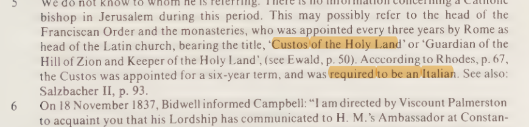
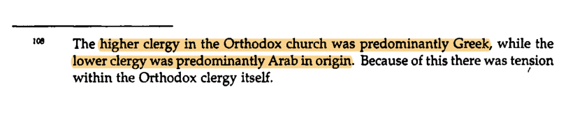
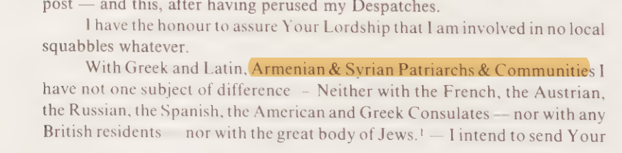
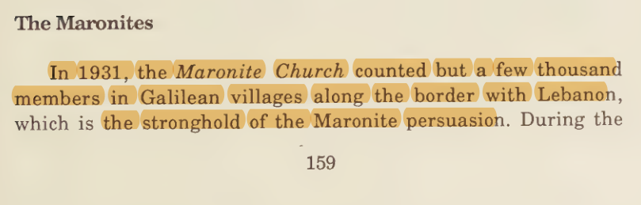
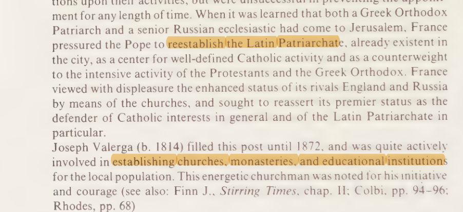
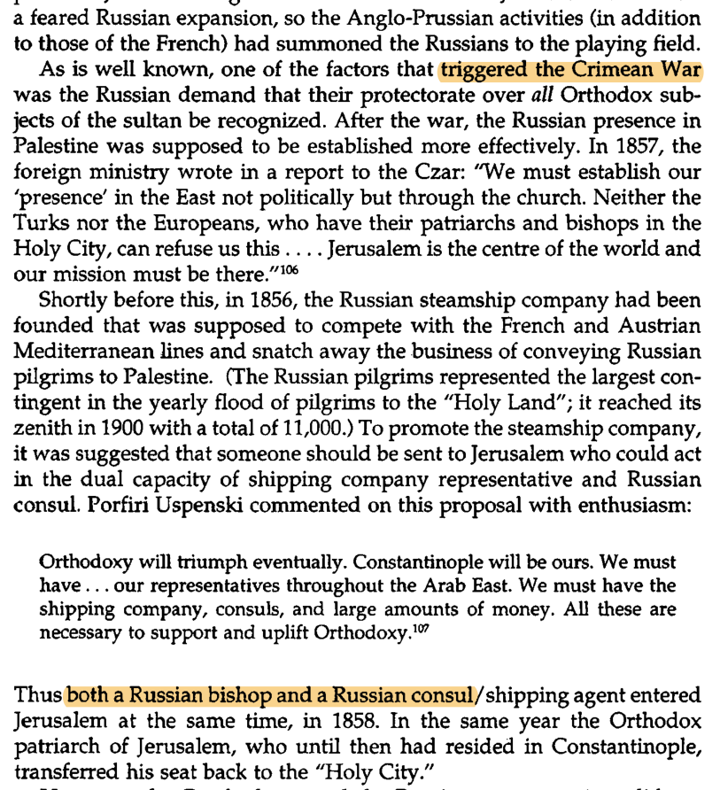
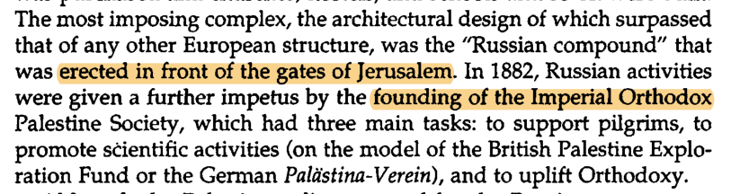
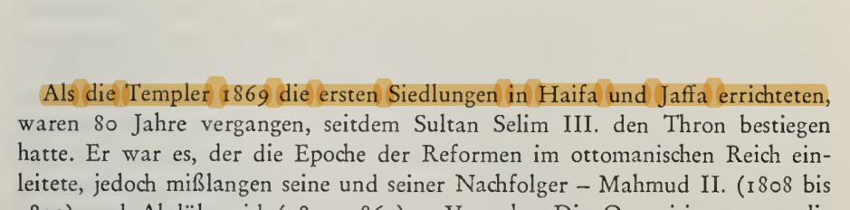
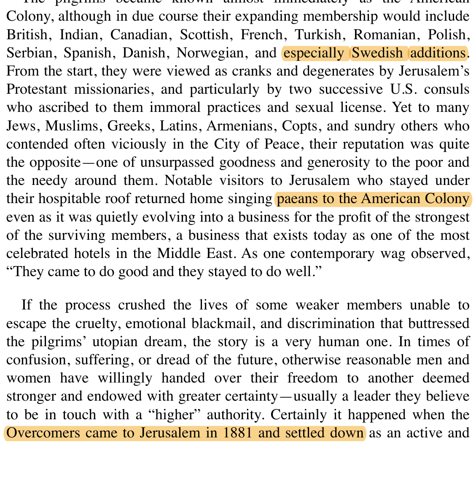

Across the full Ottoman period Christian in-migration into Palestine ran mainly through institutions rather than mass settlement — the long-standing ecclesiastical communities that span the whole era (the Franciscan Custody, the Greek-Orthodox and Armenian patriarchates, the Syriac and Maronite churches), and then a nineteenth-century surge of pilgrim and church infrastructure under European protection (the restored Latin Patriarchate, the Russian Orthodox establishment) together with a small number of Pietist and millenarian settler colonies (the German Templers, the American Colony). This ledger lists the non-Arab and institutional Christian cohorts; the indigenous Arab-Christian population — roughly a twelfth of Palestine — is a continuous local baseline and is noted as such, not as in-migration.
| # | Period | Cohort & pattern | Scale (est. population) | Principal reception zones | Source tradition | |
|---|---|---|---|---|---|---|
| Continuous ecclesiastical communities 1516 – 1917 | ||||||
| 01 | continuoussince 1342 |
Latin Catholic — Franciscan Custody
The Custody of the Holy Land brought a continuous in-migration of international Franciscan friars, predominantly Italian-speaking, sustained by the European Catholic powers under the Capitulations and anchoring the Latin presence through the whole Ottoman period. |
Institutional friars & clergy; continuous since 1342 | Jerusalem · Bethlehem · Nazareth Christian Quarter & holy sites | Ecclesiastical Consular | |
Eliav, Britain and the Holy Land 1838–1914 (1997), p. 115  | ||||||
| 02 | continuousPatriarchate |
Greek-Orthodox hierarchy
The Greek-Orthodox Patriarchate drew its higher clergy from the Balkans and the Greek-speaking world, presiding over a largely indigenous Arab-Orthodox laity. The in-migrant element is the Greek/Balkan hierarchy and monastic brotherhood, not the Arab congregations. |
Clergy + hierarchy over a largely indigenous Arab-Orthodox community (~16,800 in 1847) | Jerusalem · Nazareth · Bethlehem Patriarchate & monasteries | Ecclesiastical Census | |
Schölch, Palestine in Transformation 1856–1882 (1993), p. 59  | ||||||
| 03 | continuouspost-1565 protection |
Armenian (Gregorian) community
A continuous Armenian presence sustained by the Patriarchate of St James — formalised under Ottoman protection after 1565 — with clergy and pilgrims arriving via Constantinople and the Armenian highlands and concentrating in the Armenian Quarter of the Old City. |
Clergy + community continuous; convent-anchored | Jerusalem Armenian Quarter (Old City) | Ecclesiastical Secondary | |
Eliav (1997), p. 212  | ||||||
| 04 | continuousOttoman trickle |
Syriac Orthodox & Chaldean
Small Syrian- and Mesopotamian-origin communities sustained by a continuous Ottoman-era trickle, maintaining patriarchal institutions and a modest presence in the Old City of Jerusalem. |
Small community continuous trickle; convent-anchored | Jerusalem Old City (St Mark's & nearby) | Ecclesiastical Secondary | |
Eliav (1997), p. 212 | ||||||
| 05 | 16th c.+Mt Lebanon trickle |
Maronite trickle from Mount Lebanon
A small, continuing migration of Maronites from Mount Lebanon into the upper Galilee, sustaining village communities such as al-Jish (Gush Halav) through the Ottoman centuries. |
Village-scale small continuing trickle | Upper Galilee al-Jish (Gush Halav) & nearby villages | Ecclesiastical Secondary | |
Colbi, A History of the Christian Presence in the Holy Land (1988), p. 159  | ||||||
| Nineteenth-century expansion 1847 – 1917 | ||||||
| 06 | 1847+Latin restoration |
Latin Patriarchate restored
The restoration of the resident Latin Patriarchate of Jerusalem in 1847 brought renewed in-migration of Catholic clergy and teaching and nursing orders, expanding institutional Catholic infrastructure across the holy places. |
Institutional clergy & orders; Patriarchate restored 1847 | Jerusalem · Bethlehem · Beit Jala · Nazareth seminaries, schools, hospices | Ecclesiastical Consular | |
Eliav (1997), p. 144  | ||||||
| 07 | 1853+Russian protection |
Greek-Orthodox influx under Russian protection
From the Crimean War onward, the Russian-protection regime underwrote a substantial expansion of the Greek-Orthodox presence and its clergy and pilgrims across the patriarchal sees. |
Expansion enlarged presence under Russian protection (1853+) | Jerusalem · Bethlehem · Nazareth patriarchal sees | Consular Secondary | |
Schölch (1993), p. 58  | ||||||
| 08 | 1860+Pilgrim infrastructure |
Russian Orthodox pilgrim infrastructure
Russian-Empire clergy and pilgrims built a dense infrastructure of hostels, churches and property — the Russian Compound (1860), holdings on the Mount of Olives and at Ein Karem — formalised by the Imperial Orthodox Palestine Society from 1882. |
Pilgrim infrastructure resident clergy small; seasonal pilgrim flow large | Jerusalem area Russian Compound (1860) · Mount of Olives · Ein Karem | Consular Secondary | |
Schölch (1993), p. 59  | ||||||
| 09 | 1868–1914German Templers |
German Templers (Tempelgesellschaft)
A Württemberg Pietist sect founded six agricultural-and-trade colonies across Palestine, the largest discrete Christian settler cohort of the period. The community was expelled by the British as enemy aliens in 1939–41, and its properties passed to the Israeli state after 1948. |
~2,000 by 1914, across 6 colonies; expelled 1939–41 | Coast, Galilee & Jerusalem Haifa (1868) · Jaffa · Sarona (1871) · Wilhelma · Bethlehem of Galilee · Waldheim | Settler Secondary | |
Carmel, Die Siedlungen der württembergischen Templer (1973), p. 1  | ||||||
| 10 | 1881+Millenarian colony |
American Colony (Spafford)
A small American and Swedish Christian Restorationist community settled in Jerusalem from 1881, later well known for its photographic and charitable work; its quarter gave its name to the American Colony neighbourhood. |
~100+ at peak; American & Swedish millenarians | Jerusalem Old City, then the American Colony quarter | Settler Secondary | |
Geniesse, American Priestess (2008)  | ||||||
10 communities & cohorts · the indigenous Arab-Christian population is a continuous baseline, not listed as in-migration
This is a descriptive ledger, not an argument, and the third in a set with the Muslim and Jewish in-migration sheets for the full Ottoman period. It records non-Arab and institutional Christian in-migration only. The large indigenous Arab-Christian population — Orthodox, Catholic and others, roughly eight per cent of Palestine in the late nineteenth century — is a continuous local community, not an in-migration cohort, and is deliberately not listed here as one; the Greek-Orthodox and Latin rows above refer specifically to the in-migrating clergy and hierarchy set over those indigenous congregations.
Most rows are continuous institutional communities spanning the whole Ottoman period rather than dated waves — the genuine character of Christian in-migration here; only the nineteenth-century band (the restored Latin Patriarchate, the Russian Orthodox establishment, the Templers and the American Colony) consists of datable expansions and discrete settlement cohorts. The source-tradition tags indicate the kind of evidence — patriarchate and Custody records, European consular reporting under the Capitulations, Ottoman and consular counts, and the settler colonies' own records. Figures are order-of-magnitude only.
Drawn from · Carmel, Die Siedlungen der württembergischen Templer 1868–1918 (1973) · Lemire, Jérusalem 1900 (2013) · Schölch, Palestine in Transformation 1856–1882 (1993) · Eliav, Britain and the Holy Land 1838–1914 (1997) · the French-consul count of 1847 (Cohen-Muller) · and the Survey of Palestine 1945–46 for the late-period baselines.